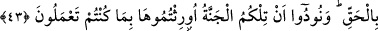
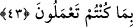

CENNET EHLİ
42. İnanıp da iyi işler yapanlara gelince -ki hiç kimseye gücünün üstünde bir
vazife yüklemeyiz- işte onlar, cennet ehlidir. Orada onlar ebedî kalacaklar.
43. (Cennette) onların altlarından ırmaklar akarken, kalplerinde kinden ne varsa
hepsini çıkarıp atarız. Ve onlar derler ki: “Hidayetiyle bizi (bu nimete) kavuşturan
Allah’a hamdolsun! Allah bizi doğru yola iletmeseydi kendiliğimizden doğru yolu
bulacak değildik. Hakikaten Rabbimizin elçileri gerçeği getirmişler.” Onlara: İşte
size cennet; yapmış olduğunuz iyi amellere karşılık ona vâris kılındınız diye
seslenilir.
Allah’ın indirdiği ayetlere “inanıp salih amel” yani bu ayetlerle tesbit olunan salih
amelleri “işleyenler”
Sâlih amel, kendisi ile Allah Teâlâ’nın rızası istenip aranan amellerdir.
-ki hiç kimseye gücünün” takatinin, kudretinin “üstünde bir şey yapmasını
yüklemeyiz- Bu cümle, ara cümlesidir. Nimetleri bol olan cennette ebedî olarak kalmayı
hak etmelerinin sebebini göstermek içindir: Bu sebeplerden ilki iman, diğeri ise -her ne
kadar güçlerini sonuna kadar kullanmamış olsalar da- güçlerinin yettiği kadar salih
amellerle muttasıf olmalarıdır.
“işte onlar cennet ehlidir, onlar orada ebedî kalacaklardır.”